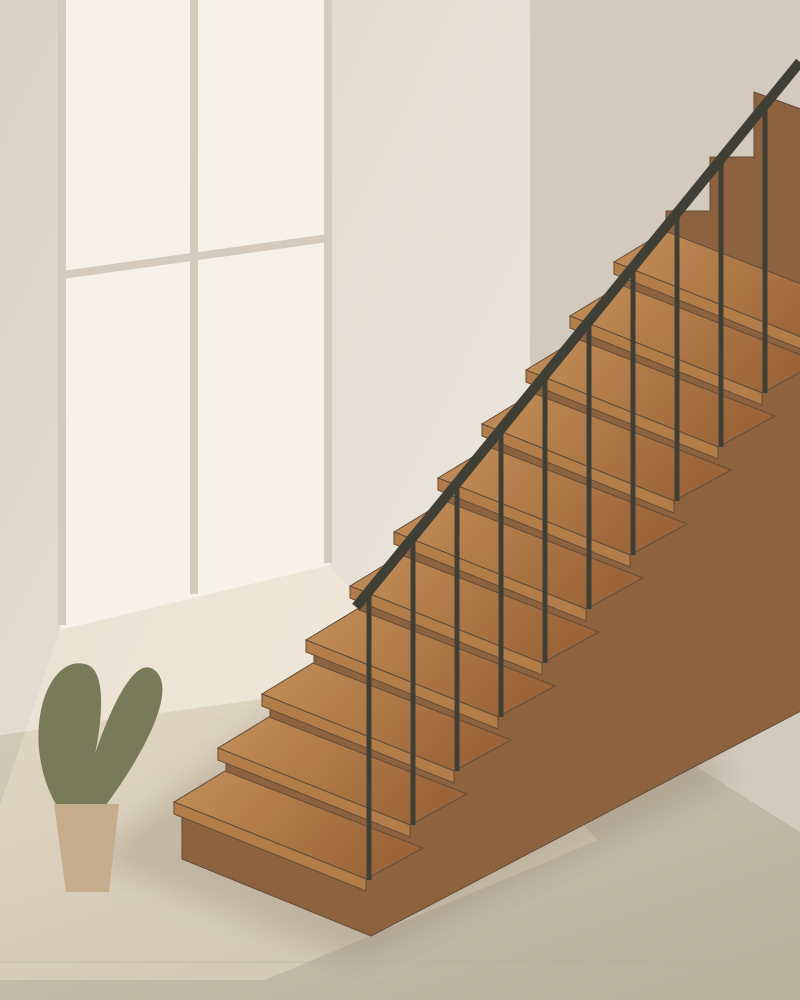

Тепло дерева
↗Естественная фактура и уютные оттенки.
ИЗГОТОВЛЕНИЕ ЛЕСТНИЦ В КЕМЕРОВО
Соединяем этажи, материалы и ваши идеи.
Создаём лестницы, которые становятся частью дома.

ФОРМА. МАТЕРИАЛ. ХАРАКТЕР.01 / МИР СТУПЕНЕЙ01 — НАШ ПОДХОД
Лестница задаёт настроение всему пространству. В «Мире ступеней» мы начинаем с вашей идеи: какой вы видите свой дом, что для вас удобно и какие детали вам близки.
Обсудим форму, материалы и внешний вид, чтобы найти решение именно для вашего интерьера.
От первого эскиза
до последней ступени
02 — ВДОХНОВЕНИЕ
Несколько идей для вашего пространства.
Материалы и исполнение обсудим индивидуально.
Естественная фактура и уютные оттенки.
Выразительные линии и строгая геометрия.
Сочетание фактур в единой композиции.
На иллюстрациях — идеи исполнения. Фотографии выполненных работ появятся в портфолио.
03 — ОТ ИДЕИ К РЕЗУЛЬТАТУ
Сначала знакомимся с задачей.
Затем договариваемся о деталях.
Расскажите о доме, пожеланиях и стиле. Фотография помещения или пример помогут начать разговор.
Уточняем размеры, конструкцию, материалы и отделку. Согласовываем стоимость и сроки.
После согласования проекта переходим к изготовлению лестницы по выбранным параметрам.
Порядок доставки и монтажа согласуем заранее, с учётом готовности вашего дома.
ПОЛЕЗНО ЗНАТЬ
Подготовьте примерную высоту между этажами, размеры проёма и фотографии помещения. Если есть понравившаяся лестница, сохраните её фото. Точный расчёт потребует уточнения размеров и материалов.
Да. Референсы, эскизы и фотографии интерьера помогут понять ваши пожелания. Возможность реализации конкретного решения обсудим индивидуально.
От размеров, конструкции, выбранных материалов, ограждения и отделки. Стоимость и сроки определяются после обсуждения проекта.
ДАВАЙТЕ НАЧНЁМ С ВАШЕЙ ИДЕИ
Новый дом или обновление интерьера?
Подготовьте несколько деталей о вашей лестнице.
Соберите пожелания в удобный текст для обсуждения.
Контактный телефон скоро появится. Этот бриф не отправляет заявку — текст можно сохранить для разговора.